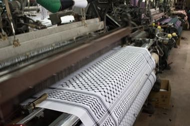
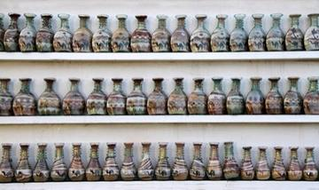
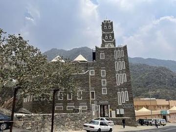
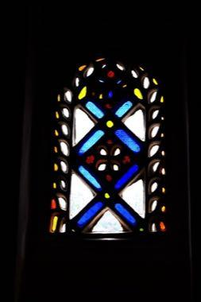
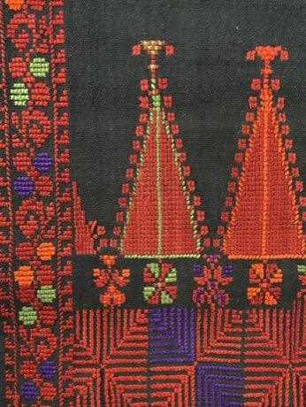

Home / Living Traditions / Mesopotamia, Levant and Arabia
Encyclopedia ID 1310
Keffiyeh Pattern Loom
Also known as Kufiya · كوفية


Thread the loom and weave the houndstooth, fishnet and bold-line bands in the right order to complete a scarf pattern against a timer.
Heritage note
Part of the living heritage of Palestine.
Origins
A living tradition passed from person to person; it is not tied to a single dated origin. It belongs to the cultural world of Mesopotamia, Levant and Arabia.
Sources
Related entries


Ebru paper marbling
Turkey · Crafts and making
Jordanian Sand Bottle Art
Jordan · Crafts and making
Al-Qatt Al-Asiri Wall Painting
Saudi Arabia · Crafts and making
Qamariya Gypsum Window Designer
Yemen · Crafts and making
More from Palestine

Buzuq Long-Neck Lute
Lebanon +2 · Musical instrumentsPlay preview · in the String Music of the World app

Nabulsi Soap Tower
Palestine · Crafts and making

Edrees
Palestine · Board and table games